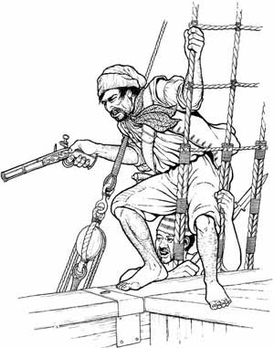

| Η πειρατεία στη Μεσόγειο  Το φαινόμενο της πειρατείας, δηλαδή της ληστείας εμπορικών πλοίων, της επιδρομής και της λεηλασίας των ακτών και των νησιών, είναι πανάρχαιο. Στα βυζαντινά χρόνια το μεγαλύτερο ορμητήριο των πειρατών ήταν η Κρήτη. Για τις επιδρομές τους χρησιμοποιούσαν μικρά σχετικά σκάφη με πολυάριθμο όμως πλήρωμα. Οι «φούστες», μικρά και ευκίνητα πλοία, χαρακτηρίζονται από τον Κ. Σάθα, στον πρόλογό του στο Χρονικό του Γαλαξειδίου, ως «πλοία του Σατανά». Για την προστασία των νησιών και των παράκτιων περιοχών από τους πειρατές υπήρχαν παρατηρητήρια, «βίιγλες» ή «βιγλατόρια», απ’ όπου οι «βιγλάτορες» παρακολουθούσαν τα καράβια, που πλησίαζαν στη στεριά. Μόλις διέκριναν κάποιο ύποπτο πλοίο, ειδοποιούσαν τον πληθυσμό να καταφύγει στα κάστρα, υψώνοντας συνήθως μια σημαία, αν ήταν ημέρα, ή αναμμένους δαυλούς, αν ήταν νύχτα. Η πειρατεία συνεχίστηκε και σε όλη την περίοδο της φραγκοκρατίας. Τους πρώτες αιώνες της τουρκοκρατίας (15ο αι. και τον 16ο αι.) το φαινόμενο παρουσίασε μεγάλη έξαρση. ¶νθρωποι κάθε εθνικότητας και θρησκεύματος επιδίδονταν στην πειρατεία. Ο πιο γνωστός πειρατής ήταν ο Αλγερινός Μπαρμπαρόσα, που με τις επιδρομές, τις λεηλασίες και την αιχμαλωσία χιλιάδων Ελλήνων, έσπειρε τον τρόμο και ερήμωσε αρκετά νησιά. Η οργή και η αγανάκτηση των Ελλήνων για την αρπακτικότητα των Αλγερινών πειρατών αποτυπώνεται στο δημοτικό τραγούδι: «Ήλιε που βγαίνεις το ταχύ, σ’ ούλον τον κόσμον δούδεις, σ’ ούλον τον κόσμο ανάτειλε, σ’ ούλη την οικουμένη στω Μπαρμπαρέσω τις αυλές, ήλιε μην ανατείλεις. Κι αν ανατείλεις, ήλιε μου, να γοργοβασιλέψεις, γιατί έχουν σκλάβους έμορφους, πολλά παραπονιάρους και θα γραθούν οι γιαχτίδες σου πο τω σκλαβώ τα δάκρυα…» [συλλογή Γ. Ιωάννου] Στην πειρατεία όμως επιδόθηκαν και Έλληνες. Οι πιο φημισμένοι ήταν οι Μανιάτες. Τη Μάνη την ονόμαζαν Μεγάλο Αλγέρι. Πειρατές και κουρσάροι στη Μάνη |
||